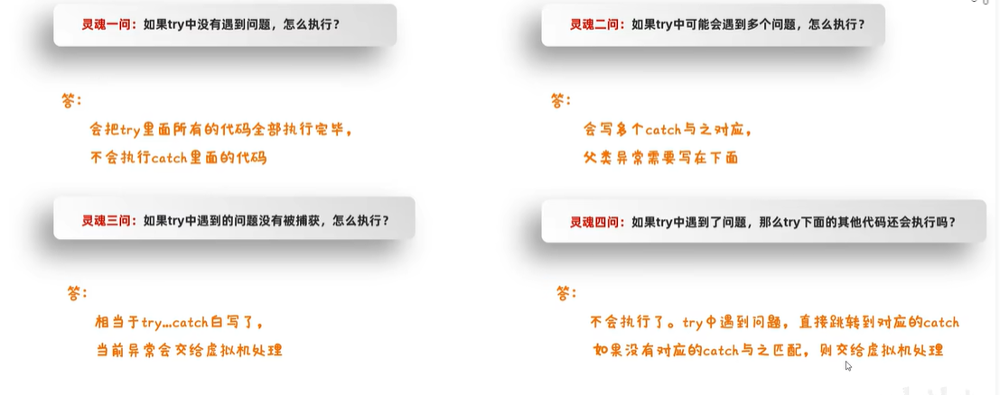

1、双列集合：
双列集合一次需要存储一对数据，分别为键和值，键不能重复，值可以重复，两者一一对应。
Map是双列集合的顶层接口。

put方法除了添加还有覆盖的功能，再添加数据时，如果键不存在，直接把键值对对象添加到map集合中，方法返回null，如果键存在，会把原来的键值对对象覆盖，并把覆盖的值进行返回。
Map遍历方式：
- 键找值（map.keySet()将键放入一个单列集合，在去找值）
- 键值对（map.entrySet()，返回键值对对象，再用getKey()获取键，getValue()获取值）。
- lambda表达式map.forEach((key,value)->{})。（底层就是第二种方法）
HashMap:（无序、不重复、无索引）
- 底层也是哈希表结构的
- 依赖HashCode方法和equals方法保证键的唯一
- 如果键存储的是自定义对象，需要重写HashCode方法和equals方法，如果值存储的是自定义对象，不需要重写HashCode方法和equals方法。
linkedHashMap:（有序、不重复、无索引）
TreeMap:（可排序、不重复、无索引）
- 底层和TreeSet一样，都是红黑树结构
- 可排序：对键进行排序（1、实现Comparable接口，指定比较规则。2、创建集合时传递Comparator比较器对象，指定比较规则。）
1.TreeMap添加元素的时候，键是否需要重写hashCode和equals方法？ 不需要，跟HashMap的键有关。
2.HashMap是哈希表结构的，JDK8开始由数组，链表和红黑树组成的。既然有红黑树，HashMap的键是否需要实现Compareable接口或者传递比较器对象呢？ 不需要，因为在HashMap的底层，默认是利用哈希值的大小关系来创建红黑树的。
3.TreeMap和HashMap谁的效率更高？ 如果是最坏的情况，添加了8个元素，这8个元素形成了链表，此时TreeMap的效率更高，但是这种情况的几率非常的少，一般而言还是HashMap的效率更高。
4.三种双列集合，以后如何选择？ 默认HashMap（效率最高） ，如果要保证存取有序：LinkedHashMap，如果要进行排序：TreeMap
2、可变参数：
格式：属性类型…名字 如int…args，底层就是一个数组，java帮我们创建好。
细节：
- 在方法的形参中最多只能写一个可变参数。
- 如果方法中出现了可变参数以外的其他参数，那么可变参数要写在最后。
3、Collections：集合工具类
1
2
3
4
5
| ArrayList<String> list=new ArrayList<>();
Collections.addAll(list,"abc","bcd","sad","sdad","asd","abasdasdc");
|
4、不可变集合：
创建的书写格式：在List，Map，Set接口中，都存在静态的of方法，可以获取一个不可变的集合。
1
2
| List<String> list=List.of("张三","李四");
|
Map的of方法，参数是有上限的，最多只能传递20个参数，10个键值对。
如果要创建Map的不可变集合，键值对的数量超过10个，用Map.ofEntries()(JDK8不支持，JDK9才有，要高版本)。还有Map.copyOf()
1
2
3
4
5
6
7
8
9
10
11
12
13
14
15
16
17
18
19
20
|
HashMap<String,String> hm=new HashMap<>();
for (int i = 0; i < 11; i++) {
hm.put("张三"+i,"nanjing"+i);
}
System.out.println(hm);
Set<Map.Entry<String, String>> entries = hm.entrySet();
Map.Entry[] arr1 = new Map.Entry[0];
Map.Entry[] arr2 = entries.toArray(arr1);
Map mp=Map.ofEntries(arr2);
Map<String,String> map=Map.copyOf(hm);
|
5、Stream流
作用：结合Lambda表达式，简化集合、数组的操作
使用步骤：1、先得到一条Stream流，并把数据放上去。2、利用Stream流中的API进行各种操作。
1
2
3
4
5
6
7
8
9
10
11
12
13
14
15
16
17
18
19
20
21
22
23
24
25
| public static void main(String[] args) {
ArrayList<String> list=new ArrayList<>();
Collections.addAll(list,"a","b","c","d");
list.stream().forEach(name->{
System.out.println(name);
});
HashMap<String,String> hm=new HashMap<>();
hm.put("aaa","111");
hm.put("bbb","222");
hm.put("ccc","333");
hm.put("ddd","444");
hm.keySet().stream().forEach(name-> System.out.println(name));
hm.entrySet().stream().forEach(name-> System.out.println(name));
int[] arr={1,2,3,4,5,6};
Arrays.stream(arr).forEach(name-> System.out.println(name));
Stream.of(1,2,3,4,5).forEach(name-> System.out.println(name));
}
|
1
2
3
4
5
6
7
8
9
10
11
12
| public static void main(String[] args) {
ArrayList<String> list=new ArrayList<>();
list.add("zhangsan,23");
list.add("lisi,24");
list.add("wangwu,25");
Map<String, Integer> collect = list.stream()
.filter(s -> Integer.parseInt(s.split(",")[1]) >= 24)
.collect(Collectors.toMap(s -> s.split(",")[0], s -> Integer.parseInt(s.split(",")[1])));
System.out.println(collect);
}
|
6、方法引用
把已经存在的方法拿来用，当做函数式接口钟抽象方法的方法体。
:: 方法引用符号
1
2
3
4
5
6
7
8
9
10
11
12
13
14
15
16
| package functionDemo;
import java.util.Arrays;
public class Demo1 {
public static void main(String[] args) {
Integer[] arr={1,45,3,14,4,5,12,34,84};
Arrays.sort(arr,Demo1::subtraction);
System.out.println(Arrays.toString(arr));
}
public static int subtraction(int num1,int num2){
return num2-num1;
}
}
|
引用成员方法：
格式：对象::成员方法。
其他类：其他类对象::方法名
本类：this::方法名（引用处不能是静态方法，因为静态方法内没有this和super）
父类：super::方法名（引用处不能是静态方法，因为静态方法内没有this和super）
引用构造方法：
格式：类名::new（Student::new）
1
2
3
4
5
6
7
8
9
10
11
12
13
14
15
16
17
18
19
20
21
22
23
24
25
26
27
| package functionDemo;
import java.util.ArrayList;
import java.util.Collections;
import java.util.List;
import java.util.stream.Collectors;
public class Demo2 {
public static void main(String[] args) {
ArrayList<String> list = new ArrayList<>();
Collections.addAll(list, "张无忌,12", "周芷若,14", "赵敏,13");
List<Student> collect = list.stream().map(Student::new).collect(Collectors.toList());
System.out.println(collect);
}
}
|
7、捕获异常：为了当代码出现异常时，可以让程序继续往下执行（更多用在方法调用处，不让程序停止）
try{
可能出现异常的代码
}catch(异常类名 变量名){
异常的处理代码；
}

抛出处理：(更多用在方法处，告诉调用者出错了)
throws:写在方法定义处，表示声明一个异常，告诉调用者，使用本方法可能会有哪些异常
public void 方法() throws 异常类名1,异常类名2…{}
编译时异常：必须要写 运行时异常：可以不写
throw:写在方法内，结束方法，手动抛出异常对象，交给调用者，方法中下面的代码不再执行了
public void 方法(){
throw new NullPointerException();
}
8、IO流：存储和读取数据的解决方案
作用：读取数据
输出流：程序→文件
输入流：文件→程序
字符流：底层就是字节流+字符集。特点：一次读一个字节，遇到中文时，一次读多个字节。
缓冲流：
字节缓冲输入流：BufferedInputStream
字节缓冲输出流：BufferedOutputStream
字符缓冲输入流：BufferedReader
字符缓冲输入流：BufferedWriter
字符缓冲流两个特有的方法：BufferedReader ：readline（）
BufferedWriter ：newline（）
111